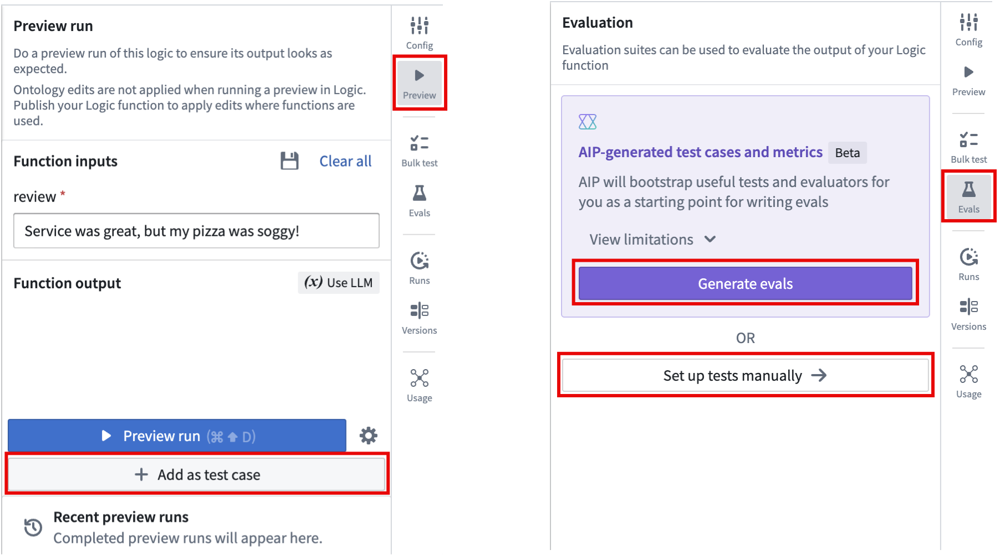
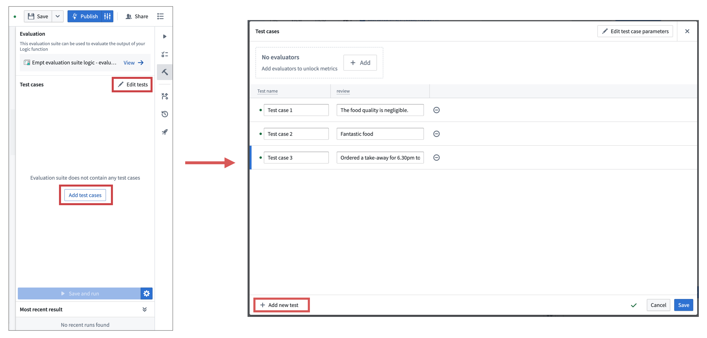
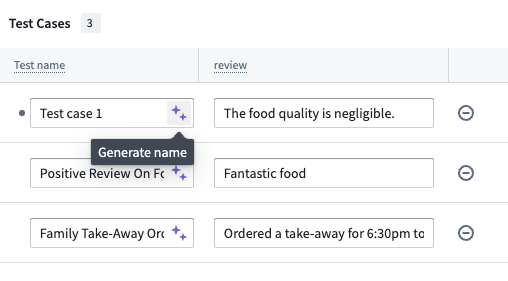
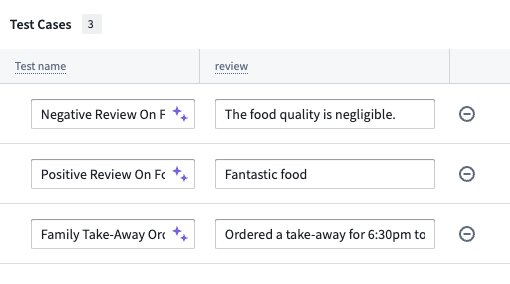
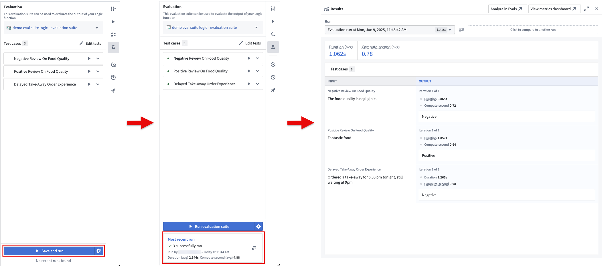
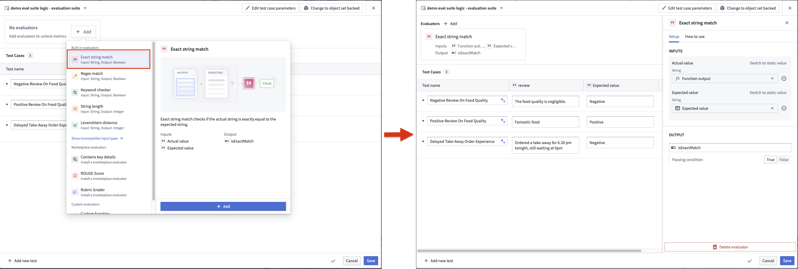
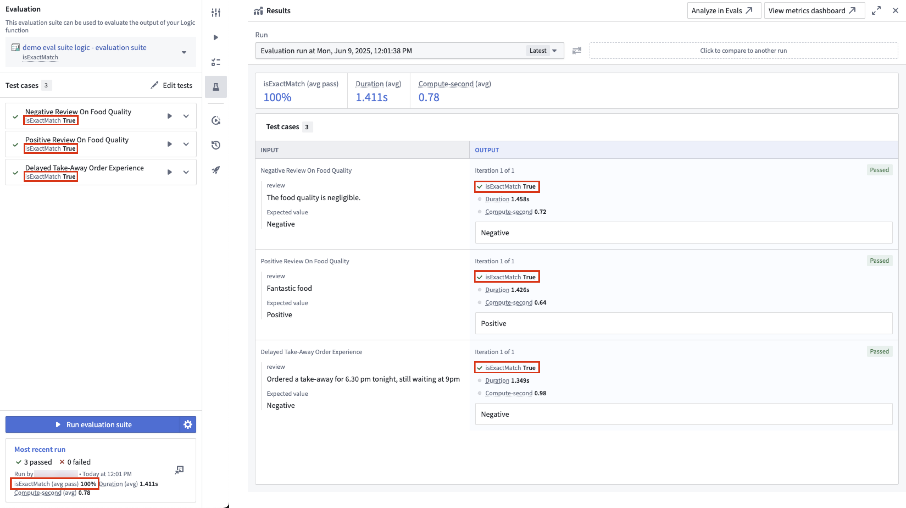

The Logic Preview panel is great for one-off testing, but for greater confidence in your Logic functions, it is important to test against many inputs.
This tutorial will walk you through creating an evaluation suite for a simple Logic function with AIP Evals.
For this example, we have a Logic function that takes restaurant reviews as input and categorizes them as positive or negative based on review sentiment. We want to create test cases with review inputs and the expected sentiment output to validate our function.
There are a few options to create an evaluation suite after saving your Logic function:
:::callout{theme="neutral"} Select View limitations to learn about cases where AIP cannot automatically generate tests and evaluators. If your Logic function is not eligible for AIP-generated evals, then the Generate evals button will be disabled and display an explanation to help you understand why. :::

After creating or generating the evaluation suite, you can add or modify test cases by selecting Edit tests in the AIP Evals panel. This will open the test case editor, where you can configure inputs for each test case and save the evaluation suite.

AIP will attempt to provide a descriptive name for your test case based off of the input parameters when you select Add as test case in the Preview panel or Generate evals in the Evals panel. You can also select the purple AIP star icon next to the test case name to generate a suggested name.

In this example, the suggested name of Negative Review On Food Quality adds more information than Test case 1:

After adding test cases, you can run the evaluation suite by selecting Run evaluation suite in the Evals panel. This will run all test cases in the suite. When the suite is done running, review the results by selecting the card in the Most recent run section.

If you created the evaluation suite from the Set up tests manually in the Evals panel or Add as test case in the Preview panel, AIP Evals will output the function's return value, but will not provide aggregated performance metrics. To scale your evaluation suite, add an evaluator to compare the outputs produced by the Logic function against the expected values and calculate aggregate metrics. For this example, use the built-in Exact string match evaluator. In practice, depending on the nature of your function, you may need to use other evaluators or write custom ones.
To add an evaluator, select + Add in the test case configuration header, then select Exact string match > Add. This will add the evaluator and open the evaluator editor, where you can map evaluator inputs to function outputs and test case columns. In this case, map the function output to the actual value and create a new parameter for the expected value. This will add a new column to the test case editor where you can input the expected sentiment for each test case.
You can configure the objective for each metric. For Boolean metrics, select whether a true or false value is considered a passing result. For numeric metrics, choose whether higher or lower values are better, and set a threshold if needed. The evaluation suite will automatically determine a passed or failed status for each test case based on these objectives.

After saving, you can run the evaluation suite again to view the aggregated metrics for your function and the passed or failed results for each test case based on your configured objectives.

Note that you do not have to run the entire suite every time you make a change to your function. You can run individual test cases by selecting the play icon next to the test case in the sidebar. This is useful for debugging and quickly iterating on your function.
After creating an evaluation suite, learn more about evaluation suite run configurations.